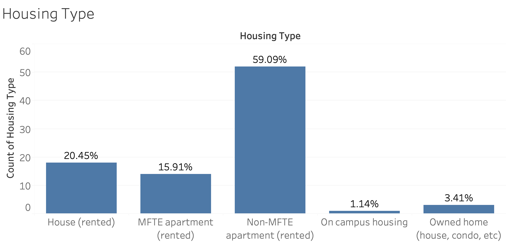
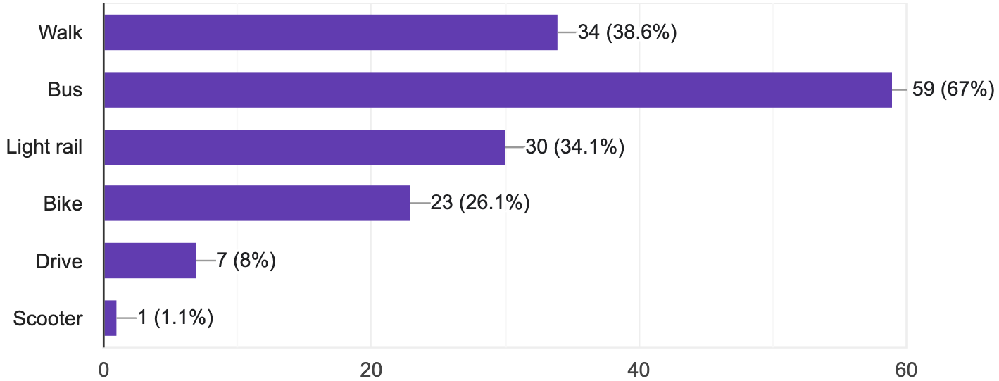
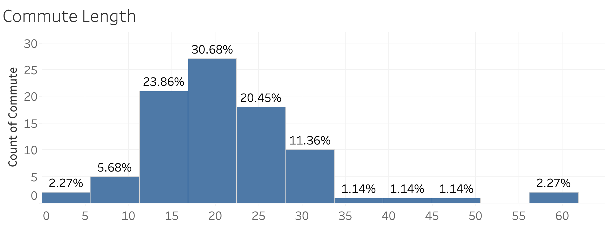

Allen School Grad Student Housing Information
Last Updated: April 19th, 2026
Maintained by: Alexandra Michael
(aemichae@cs.washington.edu).
Previous Editions: 2024 | 2022 | 2020 | 2017
- How much does an Allen School grad spend on rent per month?
- Where does everyone live?
- What is the housing process like?
- When should I start apartment hunting?
- What about graduate student dorms?
- Where can I find roommates?
- How do I find the best deals?
- What is the MFTE program? How can I take advantage of it?
- What is on the standard lease?
- What are my rights as a renter? Where can I get help if I have a problem?
- Do I need a car to live in Seattle?
- How is public transportation in Seattle?
- What is the biking situation in Seattle?
- Is there air conditioning (A/C) in apartments? What about heating?
Frequently Asked Questions
How much does a typical Allen School PhD student spend on rent per month? (top)
As of February 2026, PhD students in the Allen School pay a mean rent of $1490/month and mean utilities of $125 per month, based on a sample of 88 current students. Detailed statistics are available below.
Where does everyone live? (top)
Grad students live all around Seattle, but most commonly in neighborhoods near campus. Some of the most popular areas are (in decreasing order):
- Roosevelt/Green Lake
- University District
- Capitol Hill
- Ravenna/Bryant
- Wallingford
What is the housing process like? (top)
You can find listings for housing on sites such as Zillow, Craigslist, PadMapper, or aPodment.com, and contact the listing agent (or landlord directly) to schedule a visit. Once you visit the listing and would like to move forward with the process, you pay a non-refundable application fee. The fee amount varies, but is often around $40 - $55 for large complexes.
The application consists of a background, income, and credit check. Seattle law requires landlords to screen applications in the order that they are received (First-In-Time), so the first qualifying applicant will be accepted. If the landlord or agent accepts your application, you and the landlord or agent sign a lease and the keys are delivered to you.
When should I start apartment hunting? (top)
It's a good idea to start looking as soon as possible. Early August (around August 10) is often the busiest time because of UW students aiming to move in on September 1st, before the academic year begins in mid-/late-September. In addition, existing tenants only have to give 20 days notice to vacate, which means many places may not be listed until just a few weeks before they become available.
Renting in Seattle can be stressful, especially when looking for a more affordable place, with a large supply of renters competing for limited inventory. In the summer months when demand is at its peak, listings receive many inquiries and often multiple rental applications, and can be claimed within a week of being listed. If you find a place you like, contact the landlord, visit the place, and sign the lease as soon as possible!
What about graduate student dorms? (top)
UW has several privately-managed buildings for grad student housing. In April 2026, rates ranged from $1430 to $2300 a month depending on the building and unit size (e.g., studio, 1BR). UW housing can be closer to campus than most other options, and is often furnished.
Where can I find roommates? (top)
Finding other grad students (inside or outside of CSE) to live with can be very helpful for lowering costs. If you're an incoming PhD student with the Paul G. Allen School of Computer Science at the University of Washington, the new grad mailing list (new-grads@cs.washington.edu) and Slack channel are great places to search for roommates for the upcoming Autumn quarter.
On Facebook, you can join the University of Washington (UW) Housing, Sublets & Roommates group. When browsing these sites, please be cautious of scams!
How do I find the best deals? (top)
The best way is to consistently monitor Zillow or Craigslist, as good deals will appear very briefly before they are rented out. Rents are often lowest in the winter and early spring (e.g., December - April) due to decreased demand. However, there also tend to be fewer units on the market during the off-season.
What is the MFTE program? How can I take advantage of it? (top)
Seattle's MFTE program incentivizes developers to set aside apartments for income-/rent-restricted use. MFTE apartments can be found in denser areas like Capitol Hill or Roosevelt for often $150 - $250 less per month than comparable non-MFTE units. You can learn more on the MFTE program website or search for apartments on this map of MFTE units.
Applying for MFTE apartments requires more documentation than usual, in order to prove your income qualifies. As of 2025, grad students can qualify in one of two ways. You can (1) provide your independently filed tax return from the previous year; or (2) complete the FAFSA or WASFA to prove you would be eligible for need-based aid (you do not need to be actively receiving aid). See also Seattle city resources on the MFTE program.
What is on the standard lease? (top)
Leases are typically 12 months long, but can default to to month-to-month afterwards. Some landlords may provide options for longer leases (e.g., 15 - 16 months). It's very common for landlords to increase the cost of rent when renewing the lease term or moving to a month-to-month lease.
Leases typically also contain additional charges: an application fee, refundable security deposit, pet deposit and pet rent (if applicable), parking, and cleaning fees on move-out.
Renters in Seattle can request to pay their move-in costs (security and pet deposits, last month rent if applicable) in up to 6 monthly installments for a 12-month lease. This can help lessen the upfront costs of moving considerably. Landlords don't have to offer this option, but do have to honor it upon request. Click for more information on move-in deposits.
What are my rights as a renter? Where can I get help if I have a problem?
The Tenants Union of Washington State is an advocacy organization that offers a free tenants' rights hotline and renter information sheets, including some specific to Seattle. Be:Seattle is a nonprofit centered around tenants' rights. They offer tenants' rights workshops, a contact form where you can ask questions about your rights as a renter, and a tenant research portal where you can look up an address to see if the landlord is a serial evictor or if there have been code violations there.
Do I need a car to live in Seattle?
In general, no. Many people in the Allen School and the city live car-free. The UW campus is very accessible by public transportation and bike infrastructure. Many popular neighborhoods such as Capitol Hill, the University District, Fremont, Roosevelt, and Wallingford are dense (for Seattle) and walkable, with many restaurants, parks, and other nearby amenities.
However, many students do choose to own cars, which are helpful for making cross-city trips, driving to outdoors activities like hiking and skiing, or commuting from more suburban neighborhoods with less access to transit. Note that owning a car can be expensive, due primarily to parking fees. Street parking in the inner neighborhoods like Capitol Hill is often difficult to find, may require a paid permit, and can put your car at risk of break ins.
How is public transportation in Seattle? (top)
Seattle has two main modes of public transportation: light rail and buses.
The Link Light Rail, including both the 1 and 2 Lines, connects the UW campus with a large number of neighborhoods to the north and south, including Northgate, Roosevelt, Capitol Hill, and Downtown. The 1 Line additionally goes to South Seattle and the airport, while the 2 Line connects with Mercer Island, Bellevue, and Redmond. The light rail is very fast, particularly where the 1 and 2 Lines overlap between Lynnwood and Downtown. Many students commute via light rail from the stations in Capitol Hill, Roosevelt, and Northgate.
Seattle also has great bus service that covers the rest of the city, operated by King County Metro. In core neighborhoods, buses run frequently, every 15 minutes or faster. Except on certain buses at rush hour (usually downtown buses), buses are often uncrowded and move quickly. OneBusAway is a good resource for tracking buses in real time.
What is the biking situation in Seattle? (top)
Seattle can be wet and hilly in places, but many students commute via bike and use bikes to get around!
There are some good pieces of bike infrastructure around to make biking easier and safer. The Burke-Gilman trail is a great bike/pedestrian trail that links many neighborhoods with UW, including Ballard, Fremont, Wallingford, the U-District, Sand Point, and more. There are protected bike lanes on certain thoroughfares, such as Broadway in Capitol Hill, and Roosevelt Ave in the U-District, which make it safer to ride on the street. However, outside of protected corridors, you may have to share the road with cars, which can be dangerous. You can view the city bike network here.
Is there air conditioning (A/C) in apartments? What about heating?(top)
While some newer apartments have A/C, most Seattle housing does not. To stay cool during the summer, it's common to use a box fan to pull cool air from the outside at night, or a window A/C unit. Most of the heating is forced air; heaters are typically per room or per area (instead of a central furnace).
Grad Housing Survey Results
We conducted a survey of Allen School PhD students in February 2026, asking about where they lived and how much they paid in rent. We received 88 responses, or about 29% of the PhD student body.
Rent
The mean rent paid by respondents was $1490, with a median of $1450, and interquartile range of $1250 - $1663 (25th percentile - 75th percentile). Though rent is higher in units with fewer bedrooms, most opt to live in studio to 2 bedroom units. Especially in 1 bedroom units, the cost is offset by sharing a room with a roommate or partner.


Most graduate students live in market-rate apartments, with smaller but still significant proportions occupying either MFTE (income-restricted) apartments or rented houses. The rent paid by students in market-rate apartments has a median of $1475 and IQR of $1295 - $1808. MFTE rents have a median of $1500 and IQR of $1450 - $1608, and rents for houses have a median of $1270 and IQR of $1107 - $1425.


Locations
![A map of Seattle overlayed with data on the number of grad students
living in each neighborhood. The most popular areas are
Roosevelt/Green Lake (25), the U-District (23 respondents), and
Capitol Hill (8). Between 1 and 6 respondents live in each of the other
neighborhoods shown, which include Wallingford, Ravenna/Bryant, and
U-Village, as well as farther areas like Wedgewood, Northgate, Fremont,
Ballard, the Central District, and Sand Point/Laurelhurst.
Two students live outside of Seattle proper, one on Mercer Island and
one in Bellevue.](images/2026-neighborhoods.png)
Grad students are distributed fairly widely across the city, but among our survey respondents, most are clustered in neighborhoods near campus: Roosevelt, the University District, Capitol Hill, Ravenna, and Wallingford.
Note that the data on the map is not comprehensive! Grad students live throughout the city, including in areas not represented in survey responses, such as Belltown, Phinney Ridge, Maple Leaf, and Eastlake.
Commute
Grad students commute to campus using a variety of modes. Two-thirds of students ride the bus some of the time, and many also walk, take the light rail, or bike to school. Most students use a mix of modes: many live close enough to bike or walk when the weather is nice, others take the bus or light rail (or a combination of the two), and some drive when more convenient.
Commute times range from 5 - 10 minutes, for those living in the U-District, to 50 - 60 minutes, for those living in more distant neighborhoods. The average commute among survey respondents was 22 minutes.


Deciding Where To Live
Here’s a few words from past and current grads about each of the neighborhoods.
University District
- A bit loud, many restaurants (which is a plus), easy to commute anywhere in Seattle, Can be a bit unsafe (not happened to me before, but I have heard and got UW alert in the range of 4-10 blocks around my place)
- It's a very student-oriented area - the Ave (University Way) has a lot of food on it, there's good shopping opportunities nearby, etc., which are in a student-like price range. Being able to walk or take a short bus trip to work is very useful for me.
- I like quiet and so I've stayed away from the neighborhood between 15th and 22nd Ave, and 45th and 52nd St. Pretty much anything outside of that rectangle is fine for quiet lovers and certainly not far for walking or biking. I'd recommend not dropping below 45th St. - it tends to be noisier and more crowded there than, say, above 50th St.
Capitol Hill
- Cap hill is great; ... very central, well connected, and close/walking distance to lots of things. We often walk to pike place, downtown, south lake union, the aboretum, international district etc. It's also on the light rail, which gives us good connectivity to everywhere else., including a 20-30 minute commute to UW, and about 30 minutes to Roosevelt (where a lot of other UW people seem to live). There are supermarkets in the area, including a Trader Joe's. Cap hill itself is also a great place to be. There are lots of restaurants, bars, shops, etc. in the immediate area. But, it can get kind of rowdy at night, and its not the cleanest area ever. If you're used to living in cities, you'll be familiar with this vibe. It's also often the center of protest activity, which is a pro and a con, especially if you're international you might want to be more aware of when there may be more police activity in the area these days. Its also pretty expensive, not just rent but also restaurants
- There’s a lot to do, great places to eat, reliable public transit, and it’s very walkable. However, there is drug use and a significant unhoused population (not as bad as downtown).
- The northern part of Capitol Hill is quiet and doesn't seem to have as much noise as people from the southern part complain about. But there are still lots of grocery stores, shops, restaurants, and other things nearby. I also really love being so close to the public library and post office.
Roosevelt
- Has everything I need and nothing that I don't! Grocery store, on the link, restaurants, close to friends, townhouse instead of big apartment building. Quiet, safe, etc. Love Roosevelt!
- Walkable, good access to public transit, grocery stores (whole foods and safeway). Not the greatest restaurant selection. Nearby a park (green lake) for walking/running/biking
- I like it in general, the only downside would be it can be noisy or a bit dangerous at night right by I-5 but as long as you’re not directly facing it you should be fine.
Green Lake
- I love greenlake! At least where I live it’s very quiet and residential, but within walking distance to good restaurants and grocery stores. Green Lake itself is wonderful especially in the summer. It’s really easy to get to campus too, the 45 goes right to cse and it’s easy to bike. Ample street parking too if you have a car. It’s great if you want a more laidback vibe. If you want to go out every week, might be worth making sure that you’re within walking distance to the light rail.
University Village
- The University Village area is actually pretty nice and safe. QFC is close by which is nice for groceries, and close enough to campus that you can walk, with the Burke Gilman trail being close by. But you have buses such as 75 and 372 as an option too if required.
Ravenna
- Ravenna is great! It's convenient to commute to Udub but also has its own character. It's also pretty quiet. There are a lot of nice coffee shops and restaurants near by, and Greenlake is close as well!
- Nice, quiet and safe residential SFH neighborhood. Mostly families and students (shared houses) live around here. The commute to UW is good via 372 but general walkability is just so-so, with restaurants and grocery stores just at the edge of comfortable walking distance.
Wallingford
- Lots of families and "normal" people, so I don't feel like I'm in school all the time. I love being able to walk to the grocery store, bars, and restaurants. Still very convenient to get to campus.
- Wallingford/Green Lake area is very residential and mostly safe/quiet, but still has numerous bars/coffee shops to go to. It's central and easy to get to campus/Fremont/Ballard/downtown/etc. from there, especially if you bike. The one downside is not being on the light rail line.
- The Burke is really safe for cyclists for the most part, especially on the stretch from my place to UW. I only cross a road 3 times once I get on the Burke.
Fremont
- I love Fremont -- very walkable, and I feel safe even walking around at 2am and being a small, AFAB person. I have several grocery stores within a 10 minute walk (\< 5 minute bike ride). The noise is usually fairly minimal ... I live just a block away from the Burke, so it is a really nice bike commute to campus. There are tons of coffeeshops and fun little shops and restaurants in Fremont/Ballard, as well as local weird landmarks (like the troll or the statue of Lenin). In the summer, the canal is gorgeous and it's lovely to take walks on the Burke there. (Just watch out for cyclists!) My one complaint is that the public transit does not connect east-west very well, and northwest-southeast is even more annoying, so don't plan on going to cap hill very much. However, you can still take the 40 bus to connect to the light rail, so it's not as bad as it could be. But I would recommend still that people try to live along the light rail, since most of the transit infrastructure so far is centered around it.
- I live on “upper” Fremont and climbing the hill on a bike can be taxing, especially when I’m tired. A lot of friends live in Cap Hill and the public transit to get there is not great (two buses). There is a small, expensive grocery store (Market Time) but the closest big grocery store is not really walking distance.
Northgate
- Like: Super close to gym. Close to I-5. Can take the link or bus to school. Dislike: Far away from park. Not a good place to take a casual walk because of the heavy traffic. Not a good place to run either, besides the traffic, too many hills for running
- Very gray and boring. One of the few neighborhoods with food chains and the only barns and noble (so far). The only reason I moved here as because nobody else wants to move here so it's cheap. One benefit though is that it is decently close to Greenwood and Lake City while also having light rail accessibility.
Central District
- Love the CD! close to everything while still feeling neighborhood-y and residential. Easy street parking, safe, friendly, lots of stuff to do, walking distance to cap hill. Only downside of the neighborhood is that it's not super close to the light rail. But it's well-connected on many bus lines, so it hasn't been too big of a deal.
- Quiet, ethnically diverse, mostly new families
- If you like walking to school, it’s about a 45 minute walk, and the views are breathtaking! Walking to school means walking through the Washington Park Arboretum.
- Expect at least a 20-30 minute bike and/or bus ride.
Wedgewood
- Quiet and residential neighborhood, pretty safe overall. Limited bus routes connecting to campus and other parts of
- It is nice and quiet, with decent bus access (65 to UW and Light Rail, 62 to Fremont and Downtown, 71 to U-District and Downtown, though the latter two take on the order of 45min to an hour). The houses themselves are far from boring, ranging from relatively inexpensive older homes to some large (probably expensive) modern homes. However, the nearby grocery stores (PCC and Metro Market) are a little expensive, necessitating either a bit of a walk up to Safeway on 75th, or stopping by the QFC in U-Village on the way home.
Sand Point/Laurelhurst
- Upside: Quiet, a <10 min walk to the beach, plenty of parking, close to UW. Downside: it's a little out of the way from anything happening. It's definitely posslve to get downtown and to caphill, just takes a little longer than elsewhere
- Convenient access to buses (74 and 75).
- Next to Magnuson Park, so lots of trees and pretty quiet. A bit far from any grocery stores/restaurants, definitely need to take a bus
- Bus service isn't too great into Laurelhurst but it's a very nice house and quiet area. Still close enough to UW, U Village for groceries, etc.
Eastlake
- Eastlake is a very cozy, friendly part of Seattle. There are dogs, restaurants, and views a plenty. However, it certainly feels a bit removed from the rest of Seattle because of I5 and Lake Union limiting the ways out of it.
- Close to campus and easy to walk (~30 minutes). Also easy to bus in on the 70.
- Only one small local grocery in walking distance (Pete's Market). To get to larger markets (QFC, Safeway, Whole Foods), you have to take a bus.
Greenwood
- Greenwood is a relatively quiet neighborhood, with a mix of young people, families, and retirees.
- Greenwood has a convenient neighborhood shopping area, with a grocery store, a Fred Meyers, drugstores, a hardware store, and several restaurants. This is also the main area for antique shops in Seattle.
- Greenwood also abuts Aurora Avenue (aka Highway 99) -- both good news and bad news, since you'll find a couple more grocery stores (Larry's Market is great if you enjoy cooking) and a major bus line here, but you'll also find traffic, seedy bars, and used car lots.
- If you want to live in Greenwood and you don't like to drive, be sure you are within walking distance of the 48 bus's route down 85th St. -- changing buses to get to the university is a nuisance.
Queen Anne
- Commute to UW is very inconvenient unless you live within a short walk of a 31/32 stop, and even then it can be very long. If you are willing to bike/drive, it's not too long. QA is mostly very neighborhood-y, lots of families, lots of houses, relatively fewer apartments but there are some options for sure. I mostly recommend living on the northern edge, just across the Fremont bridge, or on the southern end, in lower QA near the Space Needle, which isn't as neighborhood-y but is quite convenient.
- Rents can range from affordable to downright expensive, but the views are almost always grand.
- Bus access to the university is a bit limited and for some parts of Queen Anne, non-existent.
Ballard
- Ballard is pretty, there are cafes and stuff, but it's definitely the burbs. Also I think like 80% of my neighbors are Amazon PMs
Housing Search Advice
Here are a few anecdotes and pieces of advice from grad students in the Allen School about how to find housing in Seattle.
Grad #1: "Come to Seattle before your start date so you can manage moving at a different time than starting a PhD. Short-term rental (by the week/month) is an option to get a place locked down before you get to Seattle, although it's more expensive. For long-term rentals, set up a search on Zillow (max price, selected area) and get email notifications; follow up on new leads immediately"
Grad #2: "Housing compared to other cities is very last minute here. Expect to look for apartments 1-2 months out from move in date. They have to give the apartment to the first person with an approved application, so if the application fee isn’t too high, apply for the promising place before visiting or touring, then eat the deposit/fee if you end up not liking it. Otherwise you are unlikely to secure the unit in my experience."
Grad #3: "Zillow and Apartments.com are the most common places to find rental places. But do keep an eye on hotpods.com where some private homeowners also list their place. Private homeowners are always better than rental management companies because they are usually more caring and invested in helping you live comfortably. If you are lucky enough, they also don't hike the rent that much."
Grad #4: "It's likely hard to find the perfect place during your first year, so I'd actually recommend going with some commercially managed building around the hot areas (Wallingford, Roosevelt, UDistrict, UVillage etc.) first if you don't want to stress out doing housing shopping. Good options will come up later and you're in better a position to get them if you don't have time urgency."
Grad #5: "You don't need a car, but it can be nice to have depending on what kinds of things you like to do. Unless you have a car already that you'll be moving with, I recommend living without a car for a while first, and only buy a car if you find you really want it. In some neighborhoods, street parking is pretty easy, in others, its hard to come by and private parking options are expensive."
Grad #6: "Don't be worried about taking buses! Seattle public transportation is much better than the rest of the country. If possible, come get a sense of what the different neighborhoods feel like. Visiting and standing on the street at night feels very different in real life than reading about it on the internet."
Grad #7: "Seattle has microhousing and it's worth considering! Both truly micro, primarily built in the previous decade by developers like the aPodments, but also micro-ish under more recent building codes, which you'll see referred to as "Small Efficiency Dwelling Units" (SEDU). Besides these, there are backyard cottage style dwellings, called "Additional Dwelling Units" (ADUs), which are often managed by individuals/small landlords. These options are often amongst the cheapest you can find by total rent if you're renting individually, and they're also relatively new construction. If you live lightly, they're amazing."
Grad #8:
"The turnaround for the MFTE application process is pretty quick (within a week if I recall correctly), as soon as you've gathered all your records. The records gathering is pretty invasive though: you have to get statements from the last 6 months from basically every financial institution that you're affiliated with and fill out several forms.
Renewals are pretty much the same deal so it's almost like re-applying every year.
Also, even if you get an internship over the summer (or are paid at 100% FTE), your renewal should be fine for MFTE since you can make up to 1.5x the limit and still stay in your unit. (You just wouldn't be able to apply if you made a ton in a summer internship recently, and aren't currently in an MFTE unit.)
The most difficult thing about getting an MFTE unit is finding one to apply for, however. Usually on websites like Zillow, there will only be one or two MFTE units listed at a time. You may have to keep an eye out for a new listing."
Grad #9:
"You have to decide which style to live. Living alone is actually a luxurious option for a PhD student. You'll live paycheck to paycheck and will need summer internship/double pay to cover the expenses for the rest of the year. If you think solitude is worth it, go for it and don't worry about being poor now, as you'll be paid more after you graduate. But if not, find a roommate :)
And if you decide to live alone, don't forget you are low-paid enough to qualify a MFTE unit. You can find all MFTE apartments here. Find a neighborhood that you like, and just make phone calls to arrange tours. Don't waste time on apartments' websites, they are usually out of sync in terms of availability and price."
Grad #10: "It's been several years since I looked at housing by myself, but when I did, I used the following two Facebook groups: https://www.facebook.com/groups/uwoffcampushousing and https://www.facebook.com/groups/445293202296621. Those would probably still be helpful tools, especially if you're looking to find people to live with (like I was). That year, I flew out to Seattle for 4-5 days in early August, slept on the couch of a friend who was interning in Seattle that summer, and spent those days staying on top of posts in those two Facebook groups and transiting around Seattle visiting places. During those days, I ended up signing a lease that started in September and coming in as a replacement third roommate( for someone who had graduated) for a 3-bedroom apartment of grad students. I flew back home in the meantime, and actually made the move to Seattle in early September. More recently, earlier this year, when my two roommates and I were looking for a new place together, we used apartments.com and found a 3-bedroom basement rental that's worked out fine for us since then."